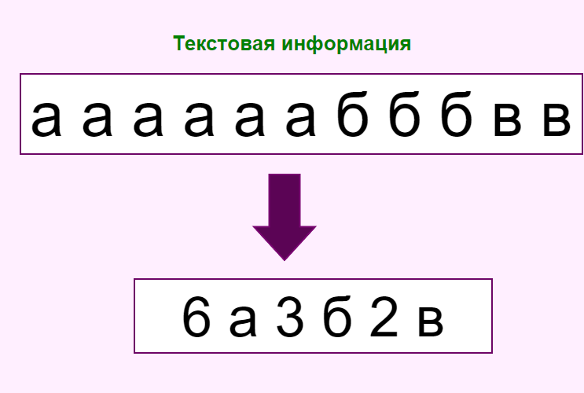
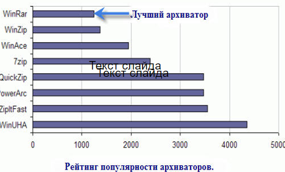

Архиваторы
Что такое архиватор
Архиватор – программа, осуществляющая сжатие и/или упаковку одного и более файлов в архив или серию архивов для удобства переноса или хранения, а также распаковку архивов.
Сжатие данных (англ. data compression) — алгоритмическое преобразование данных, производимое с целью уменьшения занимаемого ими объёма. Применяется для более рационального использования устройств хранения и передачи данных. Синонимы — упаковка данных, компрессия, сжимающее кодирование, кодирование источника. Обратная процедура называется восстановлением данных (распаковкой, декомпрессией).
Архивация выполняется разными способами за счет устранения избыточности информации. Например за счёт упрощения кодов путём исключения из них постоянный битов.
Принцип сжатия данных
Цель сжатия
- размещение информации на носителях внешней памяти и передаче по Интернету в белее компактном виде, что требует меньших объёмов памяти и сокращает необходимое для передачи информации время.
- необходимость архивации связана также с необходимостью резервного копирования информации на диски и дискеты с целью сохранения ценной информации и программного обеспечения компьютера для защиты от повреждения и уничтожения, умышленного или случайного, под действием компьютерного вируса.
Степень сжатия зависит от :
- используемого архиватора
- метода сжатия
- типа исходного файла
Типы архиваторов
Файловые архиваторы
Упаковывают один или несколько файлов в единый архивный файл, размер которого, как правило, меньше, чем суммарный размер исходных файлов, но воспользоваться запакованными программами или данными, пока они находятся в архиве, нельзя, пока они не будут распакованы. Для распаковки архивного файла обычно используется тот же самый архиватор.
Программные архиваторы
Позволяют упаковать за один прием один единственный файл - исполняемую программу ЕХЕ-типа, но зато так, что заархивированная программа будет сразу после ее запуска на исполнение самораспаковываться в оперативной памяти и тут же начинать работу.
Дисковые архиваторы
Позволяют программным способом увеличить доступное пространство на жестком диске. Типичный дисковый архиватор представляет собой резидентный драйвер, который незаметно для пользователя архивирует любую записываемую на диск информацию и распаковывает ее обратно при чтении. Однако операции чтения/записи файлов несколько замедляются, поскольку процессору требуется время для упаковки и распаковки.
Распространенные архиваторы
Существуют разные программы-архиваторы, отличающиеся форматом архивных файлов, скоростью работы, степенью сжатия файлов при помещении в архив, удобством использования. Наиболее распространенные программы-архиваторы имеют приблизительно одинаковые возможности и ни одна из них не превосходит другие по всем параметрам: одни программы работают быстрее, другие обеспечивают лучшую степень сжатия файлов. Даже если сравнивать программы только по степени сжатия, то среди них нет лидера: разные файлы лучше сжимаются разными программами.
- WinRar
- WinZip
- 7-Zip
Какой архиватор самый лучший?
Результаты независимого тестирования по выявлению самого лучшего архиватора.
Преимущество форматов
Архив в формате ZIP
Основное преимущество формата ZIP - его популярность. Например, большинство архивов в Internet – это архивы ZIP. Поэтому приложение к электронной почте лучше всего направлять в формате ZIP. Можно также направить самораспаковывающийся архив. Такой архив является немного большим, но может быть извлечен без внешних программ. Другое преимущество ZIP - скорость. Архив ZIP обычно создается быстрее, чем RAR.
Архив в формате RAR
Формат RAR в большинстве случаев обеспечивает значительно лучшее сжатие, чем ZIP. Кроме того, формат RAR обеспечивает поддержку многотомных архивов, имеет средства восстановления поврежденных файлов, архивирует файлы практически неограниченных размеров, позволяет защитить архив паролем. Необходимо отметить, что при работе в файловой системе FAT32 архивы могу достигать только 4 гигабайт. Работа с большими размерами архива поддерживается только в файловой системе NTFS.